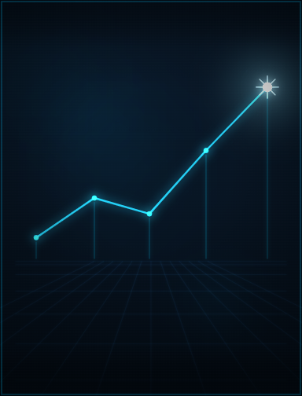

Consultoria em IA aplicada
Diagnóstico de maturidade, identificação de oportunidades e roadmap de adoção de IA. Avaliamos onde a inteligência artificial gera retorno real no seu negócio e definimos o caminho — com prioridade por impacto e viabilidade.
- Diagnóstico de processos e dados
- Mapa de oportunidades e ROI
- Roadmap de adoção de IA
- Provas de conceito (PoC)